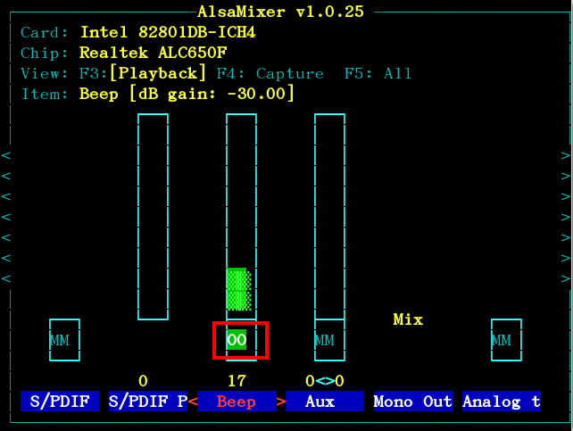

play tunes using beep
This project is maintained by ckhung
Beeptune plays a simple tune file using the primitive system beep. A tune file simply contains lines of musical pitches and their durations. You can write a tune file for "twinkle twinkle little star", for example, and play it using beeptune. Beeptune cannot play chorus or chords.
Beeptune is lightweight perl script and can be run in a console. It can be used to convey many bits of information in situations where the user cannot (or does not wish to) read from the screen. For example, it could be used in linux distributions for the blind, in debugging services and boot scripts, or as a poor man's alarm for notebook battery low power.
And finally, it's just fun. Theoretically, it could be used to create a perfect soundtrack for the ASCII art version of Star Wars :-)
 You need to do the following before you can use beeptune.
beep.
alsamixer and use
arrow keys to
navigate and turn on the volume of "Beep" channel.
Also press "m" a few times to toggle the mute flag
and make sure that the label below the "Beep"
channel is "00" instead of "MM".
Press the escape key to leave alsamixer.
The beeptune command accepts 0 or more "tune" files as
command line arguments. It plays each file in order.
If there is no command line argument, it reads from
the standard input as if it were a tune file.
You can find sample tune files in the examples/
directory. For example,
./beeptune examples/little-star.tune
plays "little star" using the system beep.
The playing speed can be changed with the -s option.
For example, ./beeptune -s 5 examples/cuckoo-waltz.tune
plays "the cuckoo waltz" five times faster, while
./beeptune -s 0.5 examples/cuckoo-waltz.tune
plays it at half the speed, taking twice as much time than
without the option.
The tune can be played at a higher or lower tone using the -b option.
For example, ./beeptune -b 7 examples/beautiful-dreamer.tune
plays "beautiful dreamer" at 7 semitones higher, while
./beeptune -b -12 examples/beautiful-dreamer.tune
plays it at an octave (12 semitones) lower.
A tune file is a simple text file.
Most lines contain two numbers.
The first number is a (possibly negative) integer representing the pitch --
0 meaning
C4 (the middle c) (261.6 Hz), 12 meaning C5
(the pitch an octave above C4), -7 meaning F3 (174.6 Hz), etc.
The second number is a positive real number representing
the duration of this pitch.
The unit of duration is determined by the length of a "click",
which defaults to 100ms (0.1 seconds).
Thus a line containing 3 5.7 means "playing a beep of D#
(311.1 Hz) for 0.57 seconds.
A line beginning with "pause" instructs beeptune to
pause for some duration. For example, a line containing
pause 4.2 causes a pause of 4.2 clicks
(0.42 seconds in the default setting).
The length of a click can be changed.
For example, a line containing click 150 changes the length
of a click to 150ms (0.15 seconds) from this point onward.
The meaning of the pitches can also be collectively changed.
For example, a line containing base 7 shifts every pitch
7 semitones higher from this point onward,
Blank lines are ignored in a tune file. On each line, everything after a # sign is ignored as comments.
I tried starting several beeptunes at the same time
(using the at command) each from its own terminal,
but it does not produce a chorus or chord. All processes in the
entire system share a single beep device and whichever process
plays the device will also immediately stop the previous
pitch the device was playing.
It would be fun to write a converter to extract a single melody (please help me with the correct music vocabulary) from a MusicXML file or a midi file and create a .tune file out of it. That would make beeptune able to play everything from all the existing online repositories of free MusicXML/midi files.
I wonder how much effort it would take to write an arduino version of beeptune. Once we have that, we would easily have an inexpensive beep chorus :-)